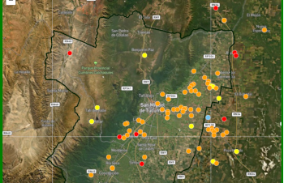
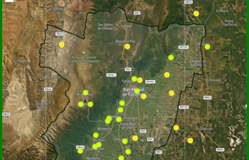
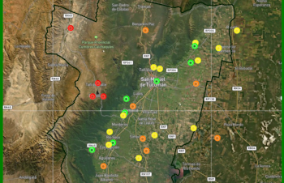

Accedé a visualizaciones temáticas para interpretar rápidamente precipitaciones, temperaturas y eventos de helada.

Mapa de acumulados mensuales para seguir distribución territorial y contrastes espaciales.

Distribución de máximas, mínimas y promedios para ubicar comportamientos relevantes.

Lectura espacial de intensidad y duración para identificar zonas más expuestas.